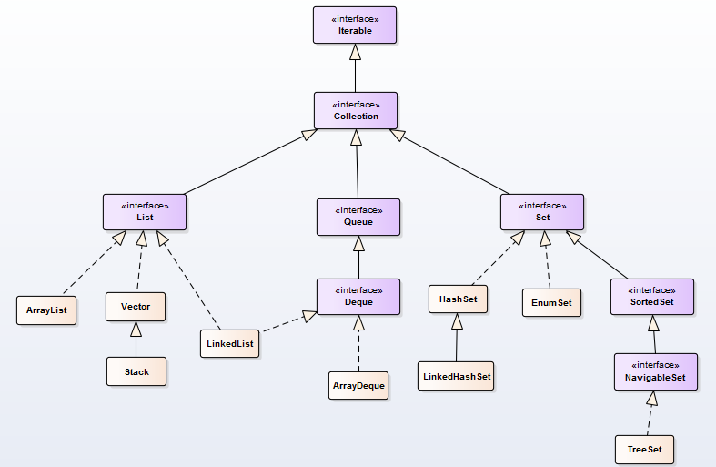

java集合讲解原文出处:本文由博客园博主杨小格子提供。
原文连接:https://www.cnblogs.com/imyanger/p/11962964.html
java集合讲解
1.概述
- 集合类的顶级接口是Iterable，Collection继承了Iterable接口
- 常用的集合主要有 3 类，Set，List，Queue，他们都是接口，都继于Collection
- Set下的实现类有HashSet，LinkedHashSet，TreeSet等
- List下的实现类主要有ArrayList，Vector，LinkedList
- Queue基本上是一个先入先出（FIFO）数据结构的队列

| ArrayList |
数组 |
查询快，增删慢，线程不安全，但效率较Vector高 |
| Vector |
数组 |
查询快，增删慢，线程安全，但效率相对较低 |
| LinkedList |
双向链表 |
查询慢，增删快，线程不安全，效率高 |
| HashSet |
哈希表 |
集合内数据不重复，依赖hashCode()和equals()方法，但元素乱序 |
| LinkedHashSet |
链表与哈希表 |
数据不重复，保证遍历顺序为插入顺序（区分：不是排序） |
| TreeSet |
红黑树 |
数据不重复且有序，支持自然排序和自定义排序（Comparable接口） |
2.List
- ArrayList和Vector内部都采用数组实现，不指定大小的情况下，默认容量10，数组的特点，查询（根据索引访问）直接寻址，所以查询的效率非常高
- ArrayList与Vector的实现基本一样，但Vector方法上都使用synchronized加锁来保证线程安全，相比ArrayList来说效率较低，所以一般我们使用ArrayList，并发也可外部自己来实现
- ArrayList和Vector尾部添加元素时，也就是常用的add() 方法，如果当前容量足够，不涉及扩容，添加效率也很高
- 我们一般说ArrayList和Vector增删慢，是因为中间插入、删除，即add(index, element)和remove(index)，或者需要扩容的尾部添加，在这样的操作时，ArrayList和Vector都需要进行数组的重组，频繁触发影响效率
- LinkedList内部采用了双向链表，在插入与删除时，仅仅调整链表指针指向，所以增删效率高，但对于元素获取，虽然LinkedList可根据索引大小来判断前序遍历还是后序遍历，但效率都较ArrayList和Vector低
3.Set
- HashSet底层实际上是一个HashMap ，初试化容量都是16，默认加载因子是0.75.
- HashSet内部元素不重复， 是根据hashCode()和equals()方法来控制，先根据hashCode()获取hash值，hash值重复则调用equals()方法，所以如果要自定义重复规则，需要重写hashCode()和equals()方法
- HashSet遍历元素是无序的，既不记录插入顺序，内部元素也不按规则排序
- LinkedHashSet是HashSet的子类，内部是LinkedHashMap，即链表加哈希表，初试化容量都是16，默认加载因子是0.75，通过链表来保证了记录插入顺序
- TreeSet底层是红黑树，排序通过Comparable接口的compareTo()方法来实现，自定义对象如果需要排序需要重写该方法
- 需要特别注意的是：我们常说LinkedHashSet有序， 这个是指他的遍历顺序与插入顺序是一致的，而说的TreeSet有序，是指其内部元素是按一定规则排序的，这个千万要区分
4.Queue
- Queue队列默认使用FIFO（先进先出）规则
- 实现类PriorityQueue 和 ConcurrentLinkedQueue是不阻塞队列，PriorityQueue 类实质上维护了一个有序列表，ConcurrentLinkedQueue 是基于链接节点的、线程安全的队列
- 而阻塞队列类，它实质上就是一种带有一点扭曲的 FIFO 数据结构。不是立即从队列中添加或者删除元素，线程执行操作阻塞，直到有空间或者元素可用
- ArrayBlockingQueue ：一个由数组支持的有界队列
- LinkedBlockingQueue ：一个由链接节点支持的可选有界队列
- PriorityBlockingQueue ：一个由优先级堆支持的无界优先级队列
- DelayQueue ：一个由优先级堆支持的、基于时间的调度队列
- SynchronousQueue ：一个利用 BlockingQueue 接口的简单聚集（rendezvous）机制